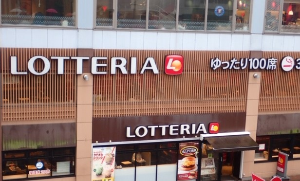

近さとコスパを選んだトップ３！！
1位はカラオケバンバン

津田沼駅北口から徒歩1分
大学生・専門学生・短大生が日曜日から木曜日18時以降フリータイムが
290円!
(二名様以上の時)しかもソフトドリンクバーが無料です！！
これは一部店舗でしかやってないから大変お得感あります
2位はロッテリア

津田沼駅内一階
こちらは駅構内にあるため電車の待ち時間があるときにはもってこい
期間限定でタピオカミルクが売っているのでお勧め
3位はモリシア地下一階のフードコートです!
津田沼駅南口徒歩3分
こちらは席が多くフードコートなので沢山の店があるのでお勧めです
個人的なお気に入りはご飯キャベツがお替り自由なとんかつ屋です
トップへ
Copyright🄫 2019千葉工大All Rights Reserved.